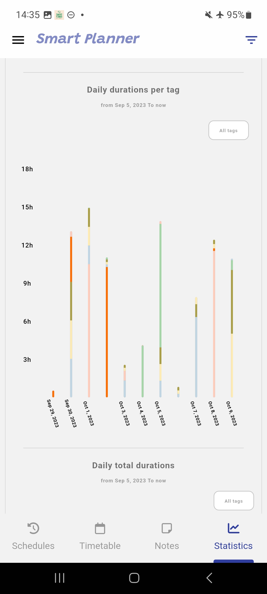

The SmartPlanner application is intended to assist the user to organize and follow in an effective and scientific manner his learning or studying tasks, as well as his general or daily life tasks.
The user can elaborate a schedule (a studying schedule, or simply a normal schedule for general tasks).
The user can :
There are 2 types of schedules:
The main functions are illustrated below:
To create a schedule (or planning), you should provide:
And for study or reading schedules, the following info:
(*) These parameters are used to have an approximation of the total required study time in the schedule.
Below is an illustration of the schedule creation form:
Schedule information wizard:
To get notified about the schedule coming tasks:
- Please add notifications to the schedule.
- Please also ensure that the notifications are allowed on your device for the
SmartPlannerapplication.
Schedule task notification
The application will ask you to allow notifications when needed.
The schedules view contains the list of created schedules (Study and agenda (normal) schedules) The list contains schedules headers with brief important information about the schedule (title, start date, repeat mode, tags...etc).
For study schedules, the application gives the user an approximation about the expected study end date of the schedule.
For study schedules also, the study progress is indicated in the schedule header.
Schedules list:
You can add custom tasks to schedules, as illustrated below:
Adding custom time slots:

Adding weekly custom time slots:
When the end time (schedule limit or the number of occurrences) of a schedule is expired, then the schedule is marked as expired.
Then the schedule is archived as follow:
Finished schedule are also archived as well.
The schedule details view contains the following information :
Accomplished time: the time that was consumed during the schedule runs. For study schedules, if the schedule is restarted, ths achieved time is reset to 0 and a new achievement is added.Runs: The number of times the schedule was run (a run is triggered using the Run Task in the schedule details view.Notes: How many notes were creaated in the scheduleFor study schedules, the statistics contains also the following data:
Progress: The study progress, or percentage of the study accomplishment (based on the achieved time and the calculated reading time)Accomplishments: How many times the schedule was finished and restarted.The schedule details contains also the schedule run statistics, the schedule notes, and eventual achievements. As well as schedule timeslots, repeat mode details and notifications
Schedule details:
The task runs with notes are indicated with the symbol 🗒.
The timetable view shows the daily tasks (each day with its scheduled tasks), for all the active schedules. Below is an illustration.
You can run a task directly via the task header play button.
For each schedule, you can create a summary. You can build the summary by aggregating the schedule tasks notes, or you can create a summary from scratch.
These summaries can be shared with other people. cf. screenshots below:
You can consult your notes in the schedule details view menu (cf below)
There is a size limit for summaries and notes created by users:
10.000 characters100.000 charactersView, edit and share notes
View, edit and share summaries
Run Task when starting your taskEnd Task button. This is mandatory so your accomplished time is taken into account in the schedule, your notes are saved, and statistics are updated. You can update the task duration at any time. As illustrated below:

While the task is running, or paused, a notification is shown indicating the running (or paused task), with its details (schedule name, start time, accomplished time, the task note). Below is an illustration:
Running task notification:
Paused task notification:
For study schedules, when the user ends the task, if the dedicated study time is fully consumed, then a dialog is displayed to the user to choose one of the following actions:
i. Finish and archive the study schedule
ii. Continue the study schedule
iii. Restart the schedule. The accomplished time and the schedule progress is reset to 0, and the schedule can be started from the beginning.
Reading schedule end dialog:
You can listen (audio reading) to files (pdf, microsoft docx, md or text files), You can also listen to web pages content via the integrated browser.
Audio listening to a local file:
Audio listening to an internet web page:
You have the possibility to adapt the audio settings (TTS engine, language...etc) for the read fil or web page.
For webpages, the audio controls are available only after the page html content is loaded.
In this view, you can consult, search, edit, or organize in folders your notes and summaries. To move a note or summary into a folder, simply drag and drop the note (or summary), or the whole schedule notes inside the desired folder.
Moving a note into a specific folder:
To create a folder, use the floating button.
Contains all the statistics about the schedules and their runned tasks (tasks run time per day, per tag, task run modes...etc).
User schedules statistics:

You can share your content (notes, summaries and statistics) with other users online.
On the other side, online content from other users that is matching your schedules (match by tags ou keywords) is automatically uploaded on real time.
When you share a content (note, summary or schedule status) online, it is shared with the following metadata:
SmartPlanner usersOnce a given content is shared online, you can update or delete it on the cloud.
In the notes view, and summary view, you have the menu to share the content (note or summary) on the cloud. Below is an illustration example for sharing a note online.
Task note menu:
Sharing a note privately within a group:
The schedule's status can only be shared privately within groups. It can not be shared publicly with all users.
For each schedule, online content that matches that schedule (based on the schedule's tags and keywords) is fetched automatically on real time.
Notifications about new cloud content:
Cloud matching content for a given schedule:
You have the possibility to block a given user and all its content. Once blocked, you will get no content shared by this user.
You can see the list of blocked users in your cloud (or online) view. You have the possibility, at any time, to unblock a user that you previously blocked.
Every user can create groups on the cloud. The other users can then join this group. The group members can then share content with each other within the group (the shared content is accessible only for group members).
Cloud groups:
Cloud group content:
The group owner can manage the group settings. Accept or decline users requests to join the group. Or delete members from the group.
Cloud group settings:
You can search for specific content (notes and summaries) on the cloud, based on some criterias. You can also search for specific groups, and then send joining requests to join them. You become a member of a specific group only when the group owner accepts your joining request.
Schedules with no specified tag are created with the default tag
General. Content shared with this tag only is not automatically uploaded, but it can be searched and retrieved from the cloud.
At any time, you can upload a backup of your schedules and application data on your Google Drive storage.
You can later download this backup on the same device (be aware that this will erase the actual application data). Or download this backup on another device.
You can upload your content (summaries, folders with various notes & summaries) to your Google Drive.
You can save your content (summaries, folders with various notes & summaries) in your local device.

Upgraded users have access to advanced application themes.
You have the possibility to search your schedules, notes, summaries and their content.
Searching in schedules:
Searching in summaries and notes contents:
You can pause a schedule for a given period. You can then resume it later on.
Paused schedules will have their notifications suspended during the pause period.
You can terminate a schedule, even if not yet completely finished.
Long press on a schedule to move it to up or down in the schedules list order.
In the schedules list, the summaries list, the tags list, you can delete an element swiping it from the right to the left (for Arabic language display, swipe from left to right).
Deleting a schedule will not delete its associated summary. However, the schedule associated notes will be deleted.
For study schedules, when the progress is >= 75%, then the user has the possibility to restart the schedule and restart the study or book reading from the beginning.
In the schedule details view, you can edit a time slot by long pressing on it. A dialog is then opened to choose a new time slot.
You can copy a schedule. Note that only the schedule properties are copied. The run history, notes and statistics are not copied.
In the schedules list view, you can filter the list of displayed schedules.
You can then display only the schedules that have at least one of the filter tags. Or display only the schedules having a given status.
Only filtered schedules will be displayed in the schedules list. And only the filtered schedules tasks will be displayed in the time.
When you clicks on the filter icon, a dialog appears to add the filter
In the filter above, only the schedules with ,history' tag are displayed.
For statistics, an additional (and exclusif) filter parameter is the tasks runs period (tasks that were run in a given period of time). This way only the statistics of this period of time are shown.
Every schedule SHOULD have at least one associated tag (at most 3 tags).
There is a list of provided tags (e.g. Economy, Arts...etc). You can also create your own custom tags.
The tags view
You can set some general settings for the application. For example:
You can also set the global audio parameters (The TTS speech engine parameters). cf screenshot below.
Application settings:
For example:
You can check the application menu for more functionnalities.
The application is available with the following translations:
(Play Store) https://play.google.com/store/apps/details?id=ch.baker.planner
(App Store) https://itunes.apple.com/app/id6470530541